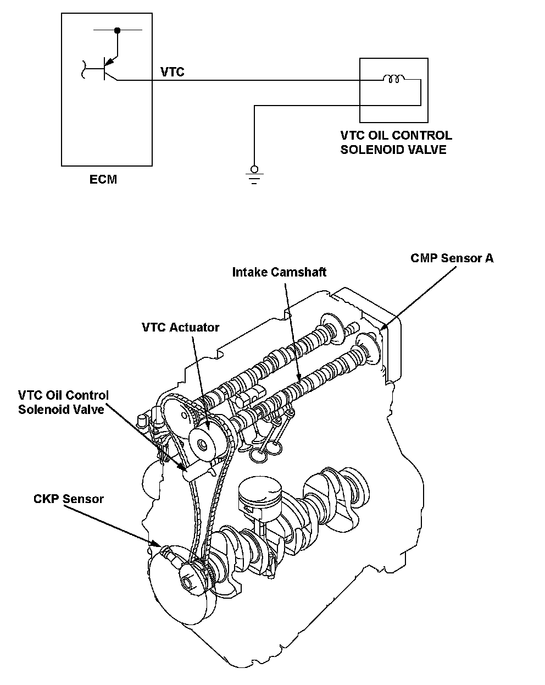
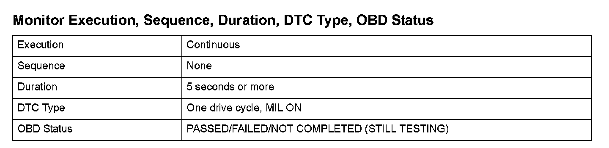

Advanced Diagnostics
DTC P0010: Variable Valve Timing Control (VTC) Oil Control Solenoid Valve Malfunction (Engine Type:K20Z3)
General Description
The variable valve timing control (VTC) consists of the VTC actuator, the VTC oil control solenoid valve, sensors, and the engine control module (ECM). The ECM controls the VTC oil control solenoid valve by duty cycle and supplies hydraulic pressure to the advance chamber or the retard chamber in the actuator so the valve timing is optimized depending on the driving conditions (engine load, engine speed, and vehicle speed). If the current when compared to the output duty cycle is out of a set value, the ECM detects a malfunction and stores a DTC.

Monitor Execution, Sequence, Duration, DTC Type, OBD Status
Enable Conditions
Malfunction Threshold
One of these conditions must be met.
- Output duty is 40 % or more and the VTC current is 200 mA or less for at least 5 seconds.
- Output duty is 5 % or less and the VTC current is 800 mA or more for at least 5 seconds.
Driving Pattern
1. Start the engine. Hold the engine speed at 3,000 rpm without load (in neutral) until the radiator fan comes on.
2. Drive the vehicle at a steady speed between 25 - 75 mph (40 - 120 km/h) for at least 5 seconds.
- Drive the vehicle in this manner only if the traffic regulations and ambient conditions allow.
Diagnosis Details
Conditions for illuminating the MIL
When a malfunction is detected, the MIL comes on and the DTC and the freeze frame data are stored in the ECM memory.
Conditions for clearing the MIL
The MIL will be cleared if the malfunction does not recur during three consecutive trips in which the diagnostic runs.
The MIL, the DTC, and the freeze frame data can be cleared by using the scan tool Clear command or by disconnecting the battery.